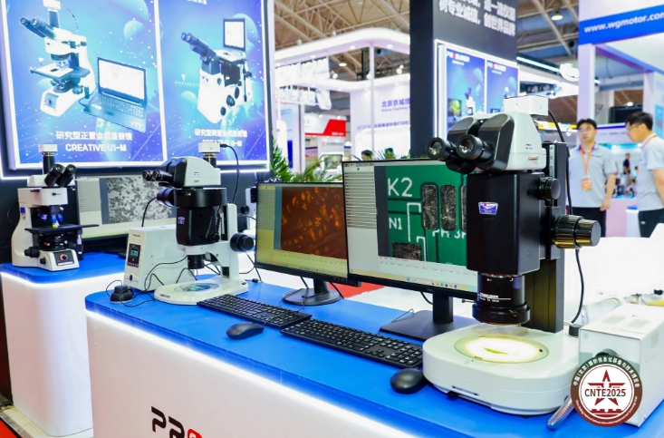

当前，以信息技术为核心的高新技术正在推动着世界范围的一场新的军事革命,建设信息化国防已经成为新世纪各国国防现代化建设所追求的重要目标。12月4日，由中国和平利用军工技术协会、全国工商联科技装备业商会和深圳国防科技工业协会联合主办的第十二届中国（深圳）军民两用科技装备博览会（简称“深圳军博会”）在深圳开幕。此次博览会吸引了众多军民两用科技领域的领导、专家、企业和观众，共同见证了这一科技盛宴的启动。
为期6天的展会，共有来自47个国家和地区的1022家企业参展，参展飞机261架、地面装备248型，举办会议论坛、签约仪式、商务洽谈等活动247场，签订总值约2856亿元人民币合作协议，成交各种型号飞机1195架，吸引近59万人参观。
探索军民两用科技融合的新模式
"国防信息化是打赢现代战争特别是信息化战争、维护国家安全和核心利益的必然要求，是提高军队核心战斗力的关键要素，是实现和提高军队作战能力和国防水平的重要保障。"中国和平利用军工技术协会秘书长方海鸥指出，军民两用科技装备的深度融合是新时代赋予我们的重大战略使命，也是推进国防和军队现代化的关键路径。近年来，我国在军民两用科技融合领域取得了显著成就，军民协同创新的体制机制日益完善，重大工程项目稳步推进，创新要素加速融合，军民协同创新体系正逐步成型。本届军博会不仅是技术与产品的集中展示，更是深化军民两用融合战略、推动我国国防现代化与经济社会高质量发展的有力实践。
据悉，本届军博会以“搭建供需对接平台，促进军民科技发展”为主题，聚焦央国企及行业小巨人企业300多家，展出面积达到15000平方米。展品涵盖了电子元器件、信息与网络安全、军工配套产品、智能制造、新材料、无人系统等众多领域。这些创新成果不仅展现了我国军民两用科技融合发展的深厚底蕴与广阔前景，更为我们探索军民两用科技融合的新模式、新路径提供了宝贵的经验与启示。
"通过将优秀的科技成果转化为实际生产力，为国防和军队现代化建设注入新的活力。"深圳国防科工协会会长表示，作为加强军民融合、促进信息沟通的重要桥梁，国防信息化展为国防信息化领域的交流与合作搭建了一个互动平台。军民双方可以共同探讨信息化建设的未来趋势，分享成功经验，携手推动国防科技的进步。同时，国防信息化展还是促进军民两用科技成果转移转化和产业化的强大“倍增器”。

军民融合，军工产品走进寻常百姓家
隐身衣、激光销毁器、排爆机器人……如果说这些高精尖装备离普通人还比较远，那在现实生活中，诸如便携性体外除颤器、北斗防盗公文包、食品除氧剂等许多军转民产品已悄悄“飞入”百姓家。
在展区，记者看到一台充电宝大小的便携式半自动体外除颤器。“别看它小，五脏俱全，该有的功能都有，甚至更加便利！”现场工作人员介绍，这款除颤器仅重0.7千克，可一键开机，并拥有10年使用寿命。“由于是便携式，为解决重复充电的难题，我们设计了一次性电池，有效期长达10年。”一次性电池材料为二氧化锰锂，受制于体积，便采用不可逆的化学反应来产生电能节省空间。
作为备受瞩目的军工行业盛会，本次博览会多项参数继续保持高水平“发挥”。作为兼具规模和影响力的军民两用科技装备产业品牌盛会，博览会遵循市场发展趋势，给国内外军民两用科技装备行业创造提升品牌度和开拓市场的一个契机。充分发挥其传递市场信息与交流先进技术的窗口作用，把脉行业发展方向。共享国际化大平台，共拓军民两用科技装备大市场。
专家表示，信息化智能化战争的作战形式主要表现为网络化、无人化、智能化，这是基于自适应、临机筹划、实时决策的“智战”，也将是信息化智能化战争的基本指挥方式，以计算为核心的体系性对抗将成为常态。信息化智能化战争中，作战节奏将更快、瞬间强度更大，体现为瞬时多维高强度智能化战争。数据、信息、网络、算法、软件代码、电磁频谱等“看不见”的要素，将是确保信息化智能化战争顺利展开，并确保作战力量充分发挥的基础和保证。信息化智能化战争，知己知彼愈加困难，敌情判断与评估更加复杂，且时效性越来越难以保证，战争的迷惑性不断加大。
在博览会期间，还举办了“2024中国（深圳）先进技术成果转化应用大会、低空经济与关联产业融合发展论坛”、“硬科技企业融资大会”以及“中国（深圳）国防军工装备配套合作发展高峰论坛”等一系列学术会议和专题论坛。众多国内知名专家、学者、企业代表齐聚一堂，共同探讨军民两用科技装备的发展趋势和应用场景，为行业未来发展提供了宝贵的思路和启示。